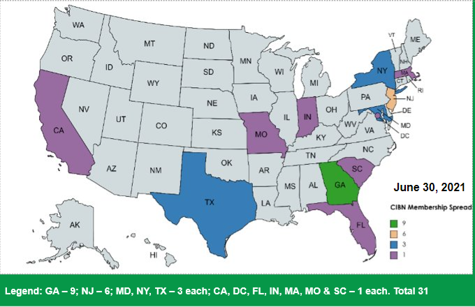

About Us
A central feature of the chequered history of the Chartered Institute of Bankers of Nigeria has been the sustained struggle to enthrone professional excellence in the banking industry in Nigeria.
This struggle, based essentially on the need to jealously guard, preserve and positively project on the noble profession of banking, which is based on the principle of “Trust and Honesty”, has not been easy considering the numerous problems associated with a developing banking industry and the Nigerian economy in general.
The CIBN Vision
To be a global reference point for skills and conduct in the banking and finance industry.
Registration
-
CIBN USA Branch was registered with Department of Business Oversight in San Francisco, CA. USA on June 10, 2014.
- Formally inaugurated in Atlanta GA. USA on August 02, 2015, by Past President & Chairman of Council Otunba Debola Osibogun, FCIB
Objectives
A major objective for the establishment of the USA Branch is provide a forum whereby members of the Institute in diaspora (i.e., those living in USA) are brought together and regularly informed about the affairs of the Institute. Following the inauguration of CIBN USA Branch, the elected officers and members were saddled amongst other things with the following tasks:
- Ensure that its members uphold all ethical standards established by the governing council of the Institute;
- Liaise with the American Institute of Bankers for the purpose of sharing information that will promote global development of the banking profession in both countries, and;
- Work as a liaison office of the Institute to collaborate with American universities to harmonize the Institute’s curricular with those of the institutions that offer banking and finance programs; and/or accept the Institute’s certification/qualification as prerequisite for admission to undertake postgraduate studies.
Meet our Executives
Olabisi Okuyemi
Chairperson
Michael Illelaboye
Vice Chairman
Membership spread of the CIBN USA Branch

(x) close
Michael Illelaboye
FirstTrust will encourage environmentally active employees to share their ideas and participate in programmes that improve and support a better environment in the community.